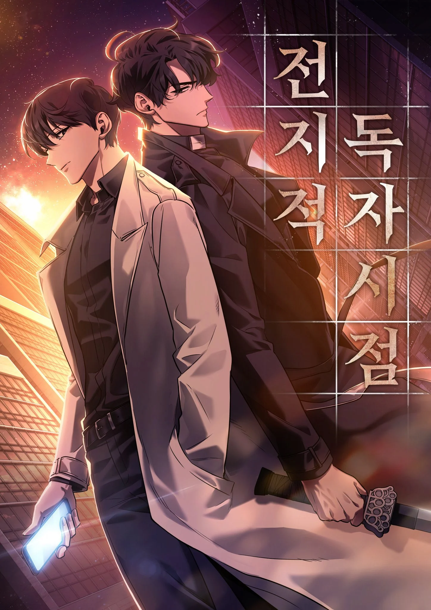
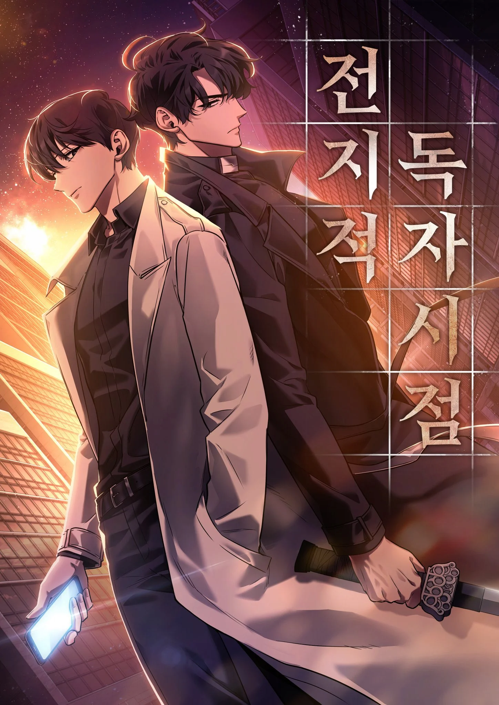

WARNING: The information following are spoilers to the light novel Omniscient Reader's Viewpoint. Proceed with Caution.
There are three main players in the ORV story line and I will be going over their key moments and my favorite scenes for each of them. I will also be including scenes from the Webtoon which will show the art adaptation of the story. I hope you enjoy!
 
